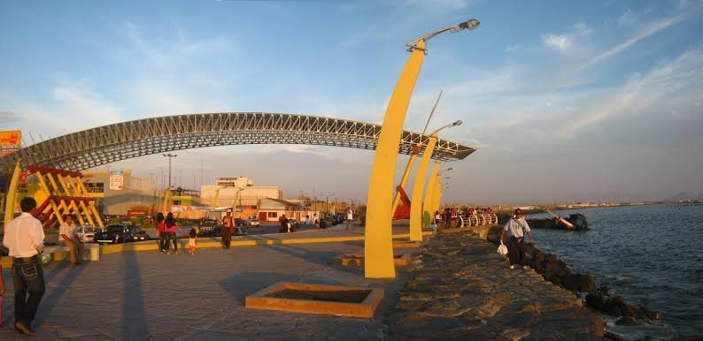
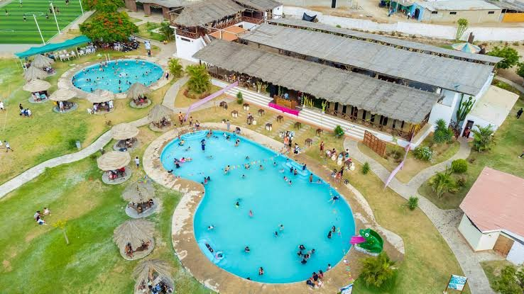

Casma
Playas de Casma
Ideales para desconectarse un fin de semana frente al mar.
Perfil personal
Más allá del código: quién soy, qué me gusta y los lugares y sabores que forman parte de mi vida.

Soy de la región Áncash, Perú, y vivo entre Chimbote y Casma. Estudio Ingeniería de Sistemas e Informática en la Universidad Nacional del Santa y trabajo como desarrollador full-stack.
Me gusta construir sistemas que resuelvan problemas reales de las personas y los negocios de mi región. Fuera de la programación, disfruto de las motos, los proyectos en casa y pasar tiempo con mi familia.
Pasatiempos
Programación, servidores y todo lo relacionado con la nube.
Me gusta el mundo de las motos y darle mantenimiento a la mía.
Instalación y configuración de sistemas de cámaras de vigilancia.
Juegos en línea para compartir partidas con amigos.
Mis rincones
Lugares que me gusta visitar y que siempre recomiendo.
Ideales para desconectarse un fin de semana frente al mar.

ChimboteUn buen lugar para caminar al atardecer y despejar la mente.

CasmaUna comunidad a la que me unen lazos muy especiales.
Gastronomía
La comida peruana es parte de quien soy. Estos son los platos que nunca rechazo.